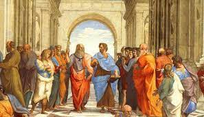

Conosciamo i Protagonisti
Con l'ateniese Socrate (469-399 a.C.) la filosofia greca compì un enorme salto di qualità divenendo ricerca incentrata decisamente sull'uomo e sull'esigenza di una verità universale. La ricerca di Socrate, che per certi versi si ricollega alla Sofistica, si muove tuttavia nella direzione di collegare il desiderio di conoscenza con il problema dell'etica, nell'ottica di una fondazione di una morale oggettiva e universale. In polemica con i sofisti, Socrate respingeva il loro relativismo (Protagora) e nichilismo (Gorgia), sia in ambito morale che gnoseologico; il vero saggio è piuttosto colui che, partendo dalla necessaria ammissione della propria ignoranza, fa di se stesso l'oggetto del proprio problema. Saggio è colui che cerca, che non si accontenta delle risposte a sua disposizione, ma sa porsi delle domande e suscitarle negli altri. Il dubbio socratico non induceva, però, allo scetticismo, bensì mirava alla verità in modo assolutamente disinteressato:Socrate la cercava non al di fuori di sé, ma nell'interiorità del proprio essere, che egli chiamava δαίμων, dàimon (cioè "demone", ma significa anche temperamento, indole).La filosofia era dunque per lui essenzialmente opera di maieutica, ovvero l'arte, propria dell'ostetrica, di mettere gli uomini in condizione di partorire da se stessi, naturalmente, la verità dell'anima.Socrate giunse così a connettere in modo inscindibile il bene con la conoscenza: non si può non seguire il bene, se lo si conosce. Mentre tuttavia lasciava indeterminato e avvolto nel mistero l'oggetto della sua indagine filosofica e del suo continuo cercare, il suo allievo Platone (427-347 a.C.) si spinse verso un più alto grado di riflessione e definì idea il vero oggetto della conoscenza umana.Questa idea (oggi diremmo «forma»)doveva risolvere non solo la questione di “cosa” sapere sollevata da Socrate, ma anche la dicotomia e le divergenze sorte tra Parmenide ed Eraclito. Essa aveva infatti i tratti della staticità e incorruttibilità dell'essere parmenideo da un lato, ma conciliava in sé anche il divenire di Eraclito: così ad esempio bianco e nero rimangono termini contrapposti e molteplici sul piano sensibile; tuttavia, è solo cogliendo questa differenza di termini che si può risalire al loro fondamento e comune denominatore, cioè l'Idea di Colore.
L'Idea è dunque l'origine (e meta finale) sia della conoscenza che della realtà, essendo cioè il modello, l'esemplare, tramite cui le cose reali sono fatte, e tramite cui ci è possibile conoscerle. Il processo mentale con cui si risale dal molteplice sensibile all'unità intelligibile venne chiamato da Platone dialettica, e consiste nella filosofia stessa, assimilata all'amore, e interpretata socraticamente come riflessione sociale, svolta dal filosofo nel dialogo con altri personaggi; in realtà questo dialogo ha una funzione più apparente che reale, consentendo al filosofo di emendare la sua ricerca dagli errori dovuti alle apparenze, spinto dal desiderio "erotico" di sapere. L'Idea sta al culmine di questo processo e supera (trascende) le particolarità relative e transitorie degli oggetti sensibili, pur essendone il fondamento.
Platone tentò così di risolvere il problema, sorto con Parmenide, circa la natura dell'Essere. Parmenide aveva detto che solo l'Essere è, mentre il non-essere non è, ma al di là di questa tautologia non aveva specificato cosa fosse questo Essere. In tal modo diventava impossibile conoscerlo, capirlo, e in ultima analisi parlarne. Ricorrendo al mondo delle Idee Platone pensò di poter oggettivare l'Essere, nel quale identificava appunto le Idee stesse, le quali sono strutturate gerarchicamente, da un minimo a un massimo di “essere”, fino all'idea suprema del Bene.Proprio questa gerarchia permette la conoscenza, perché è il raffronto dialettico tra realtà diverse, tra ciò che sta in alto (essere) e ciò che sta in basso (non-essere) a rendere possibile il sapere. Rispetto dunque a Parmenide che concepiva l'Essere e il non-essere come separati, contrapposti e incomunicabili, Platone ammise invece dei passaggi graduali dal non-essere all'Essere.
Si presentò a questo punto un dualismo tra il mondo delle idee (o iperuranio) e il mondo terreno: la nozione del mondo ideale, che in noi mortali è inconscia e assopita, si risveglia infatti proprio attraverso l'esperienza sensibile. La conoscenza è cioè una reminiscenza: noi conosciamo ciò che sapevamo già, ma avevamo dimenticato. Questo dualismo fu vissuto dallo stesso Platone ora ottimisticamente, ora più pessimisticamente, in quanto permea non solo la conoscenza ma anche la moralità e l'essenza dell'uomo lacerandolo interiormente, e venne illustrato attraverso efficaci e suggestivi miti (della caverna, della biga, dell'Eros ecc.), che propongono l'ascesa o il ritorno verso il bene e il vero. Anche alla politica Platone pose l'obiettivo della perfezione: lo Stato secondo ragione, teorizzato nella Repubblica, dev'essere organizzato sulla base di una divisione in classi sociali, corrispondenti agli elementi costitutivi dell'anima umana (razionale, intellettiva, concupiscente); riconobbe inoltre la parità tra uomo e donna.Fervido artista e poetico nell'espressione, egli tese tuttavia a svalutare filosoficamente l'arte, per il suo carattere di riproduzione imitativa della natura, già a sua volta imitante l'idea.La rigida separazione tra mondo ideale e reale, propria di Platone, piacque poco al suo discepolo Aristotele (384-322 a.C.), che in opposizione alle teorie platoniche sostenne invece l'immanenza dell'universale e considerò la realtà come sintesi di materia (elemento particolare) e forma (elemento appunto universale), in un continuo divenire che si attua nel perenne passaggio degli organismi dalla potenza all'atto. Solo Dio, ovvero il primo motore o causa prima, che determina il divenire di tutti gli altri corpi, è atto puro, ed è perciò immobile, ma attrae verso di sé gli elementi ancora in potenza.Secondo Aristotele ogni realtà ha in se stessa, e non in cielo, le ragioni (entelechia) per cui tende a essere fatta così e non in un altro modo. Egli introdusse in questo modo il concetto di sostanza, cioè di un sostrato che rimane sempre identico a se stesso e prescinde dalle sue particolarità esteriori.
Le differenze rispetto a Platone tuttavia, pur importanti, non portarono a una radicale contrapposizione,perché anche Aristotele dava grande importanza al pensiero sistematico e alle forme universali, e concepiva l'essere in forma dinamica (come passaggio dalla potenza all'atto) anziché staticamente contrapposto al non-essere. Aristotele propose in definitiva una soluzione diversa al medesimo problema di come conciliare le divergenze tra Parmenide ed Eraclito, tra l'essere e il divenire.
L'etica era pure concepita da Aristotele al modo di Socrate e Platone, cioè come ricerca della virtù, di quelle attitudini che un uomo deve seguire perché possa vivere felice. Egli faceva coincidere il valore con l'essere: quanto più una realtà realizza la propria ragion d'essere, tanto più essa vale. Agli uomini consigliava il "giusto mezzo": solo usando equilibrio e moderazione una persona può diventare felice e armonica. Allo stesso modo, le tre possibili forme politiche dello Stato (monarchia, aristocrazia, e democrazia) devono guardarsi dall'estemismo delle loro rispettive degenerazioni: tirannide, oligarchia e oclocrazia.
Come già in Platone, inoltre, secondo Aristotele la conoscenza non deriva esclusivamente dall'esperienza. Essa implica la cooperazione di sensibilità ed intelletto, e si attua in gradi, culminando con l'intervento di un trascendente intelletto attivo, che astrae la «forma» intelligibile dalle qualità sensibili e provvisorie degli oggetti.
Distinta dall'intelletto è la Logica che è articolata attraverso un processo deduttivo, la cui forma tipica è il sillogismo. Altri principi essenziali della sua logica «formale» (detta anche logica del «pensare astratto») sono il principio di identità, e quello di non-contraddizione. L'importanza di Aristotele per il pensiero occidentale si deve, tra le altre cose, proprio alla sua logica, al fatto cioè che fu lui col suo metodo a fondare e ordinare le diverse forme di conoscenza, creando i presupposti e i paradigmi dei linguaggi specialistici che vengono usati ancora oggi in campo scientifico(sia pure con notevoli mutamenti di significato).